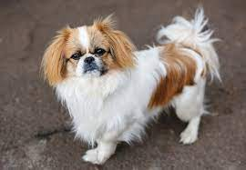

Esse Cachorro de pequeno porte tem tudo para conquistar a sua família. Não há quem resista à fofura do Pequinês. Considerada uma das menores raças de cachorro do mundo, tem a aparência de um leãozinho e conquista cada vez mais os novos tutores, que buscam por um amigo de quatro patas versátil e leal. Famoso por sua estatura, ele atrai os olhares de quem quer ter um cãozinho em um lar com pouco espaço. Esse pet se adapta muito bem a apartamentos e casas sem quintal. Saiba mais sobre a raça em nosso guia e esteja preparado ao encontrar um cachorro Pequinês para adoção!
Trata-se de um cão que não curte tanto brincadeiras, muito pelo seu baixo nível de energia. Isso também faz dele um animal pouco adepto a exercícios, com atividades diárias mais tranquilas e com ritmo menos acelerado. Nos esportes caninos, ele atua sempre no próprio ritmo. Portanto, a prática deve ser adaptada às condições de cada cachorrinho da raça. E mesmo com esse nível menor de energia e baixa demanda de atividades, é importante manter sempre uma rotina de exercícios adequados, definidos por um médico-veterinário.
Trata-se de um cão que adora crianças. Contudo, é fundamental que a interação entre ele e os pequenos seja supervisionada, assim como acontece com outros bichos de estimação. O cachorro dessa raça costuma ser indiferente aos estranhos. Além disso, a relação com outros cachorros deve ser acompanhada pelo tutor e costuma ser bem tranquila conforme a socialização do pet com outros animais quando filhote.
Fizemos um gráfico nivelando de 0 a 5 as características da raça, veja a baixo!
Não é à toa que o Pequinês é conhecido como cão de colo. De porte pequeno, a raça conta com um corpinho relativamente baixo e curto. A cabeça é razoavelmente larga, com focinho evidente e olhos redondos, escuros e brilhantes. Já as orelhinhas são destacadas pelo formato de coração e estão sempre caídas. A cauda desse cachorro é alta e ligeiramente curvada sobre o dorso. Assim como as outras partes do corpo, os pelos longos se sobressaem. A coloração é muito diversa, com dez pigmentações padronizadas e diferentes tipos de marcações.
Os banhos para o Pequinês devem ser dados pelo menos uma vez por mês ou a cada 15 dias, utilizando produtos específicos como shampoo, condicionadores e desembaraçadores para a pelagem. Devido à face curta, tanto em machos quanto em fêmeas, é crucial monitorar sinais de síndrome braquicefálica, como ronco, apneia, salivação e vômitos, e buscar tratamento veterinário imediato. Dada a sensibilidade ao calor, é recomendável criar o Pequinês em ambientes de temperatura adequada, considerando o uso de ar condicionado ou ventilação conforme orientação veterinária. Esses cuidados são essenciais para o bem-estar do animal.
Acostumar-se a um novo lar nem sempre é uma tarefa tão simples, concorda? Por isso, é muito importante atentar-se aos cuidados que um filhote de Pequinês demanda ao seu tutor. Assim, o pequenino vai se adaptar facilmente ao novo espaço, rotina e familiares! Antes de receber o peludinho, adeque o ambiente do animal com acessórios para acessibilidade, proteção contra acidentes domésticos e outros probleminhas. Além disso, não se esqueça de manter a carteira de vacinação dele sempre em dia, assim como os processos de vermifugação.